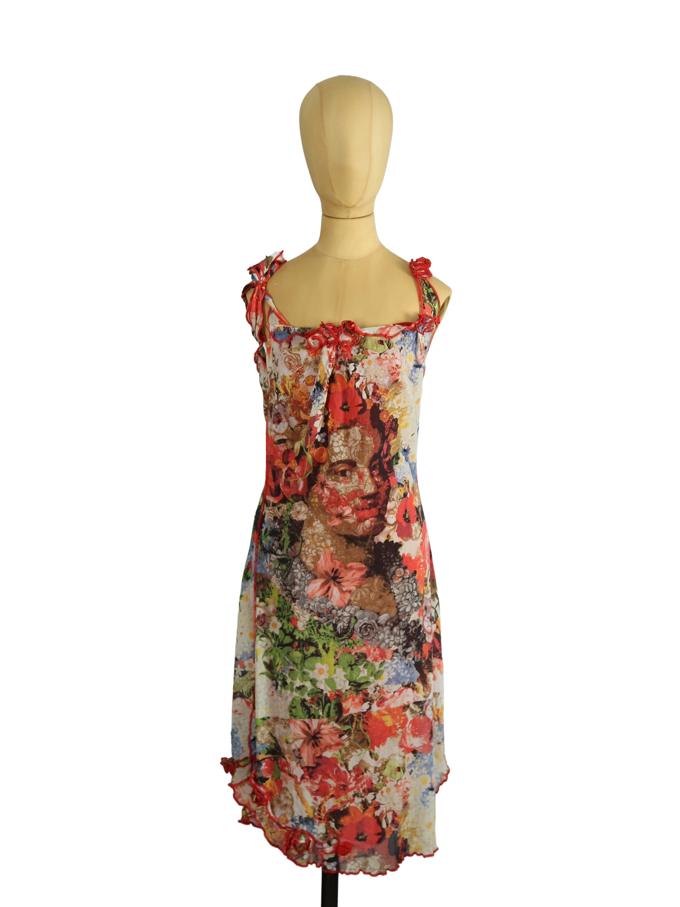

1 / 10Aus dem kuratierten Archiv von Disorder119. Ein leichtes, körpernah fallendes Kleid aus der Maille-Linie von Jean Paul Gaultier, geprägt durch eine dichte, florale Komposition in intensiven Rot-, Grün- und Cremetönen. Die Silhouette ist schmal und fließend, mit feinen Trägern und einer weich gearbeiteten Ausschnittkante, die durch organisch wirkende Rüschenabschlüsse akzentuiert wird. Das Material zeigt die typische, elastische Transparenz der Gaultier-Maille, wodurch sich das Kleid dem Körper anpasst und eine subtile Tiefe im Druck erzeugt. Im Zentrum steht eine kunstvolle, collageartige Darstellung, die florale Elemente mit figurativer Bildsprache verbindet und dem Stück eine klare visuelle Identität verleiht. Die Verarbeitung bleibt bewusst leicht und beweglich, wodurch das Kleid sowohl einzeln als auch im Layering getragen werden kann. Details: Marke: Jean Paul Gaultier Farbe: Multicolor / Rot dominant Größe: L Passform: Schmal, elastisch Verschluss: Kein Verschluss Material: Polyamid (typisch Maille) Herstellungsland: Italien Fotografie & Passform: Das Kleidungsstück wurde auf unserer Standard-Schneiderpuppe fotografiert, die wir zur konsistenten Darstellung aller Kleidungsstücke verwenden. Maße der Schneiderpuppe: Brustumfang 89 cm Taillenumfang 66 cm Hüftumfang 89 cm Schulterbreite 38 cm Diese Maße dienen ausschließlich der visuellen Einordnung und werden nicht als Artikelmaße bezeichnet. Zustand: Guter Zustand mit leichten altersbedingten Gebrauchsspuren, keine strukturellen Mängel erkennbar. Rechtliche Hinweise: Verkauf als gebrauchtes Kleidungsstück. Die Beschreibung erfolgt nach bestem Wissen und Gewissen. Farbnuancen und Oberflächenwirkungen können aufgrund von Lichtverhältnissen bei der Fotografie sowie unterschiedlicher Bildschirmdarstellungen leicht vom Original abweichen. Disorder119 steht für sorgfältig kuratierte Designerstücke mit Fokus auf Authentizität, Qualität und zeitlose Relevanz.
Disorder119 · Kuratiertes Archiv für Designer-, Vintage- und Contemporary-Mode. Jedes Stück wird einzeln ausgewählt, fotografiert und beschrieben.